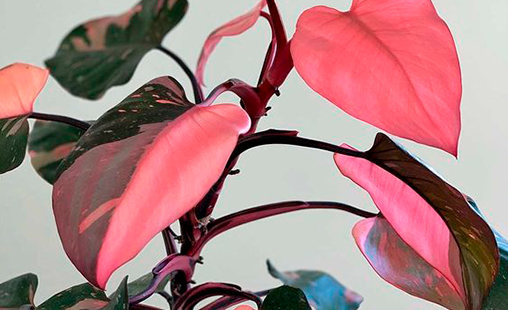
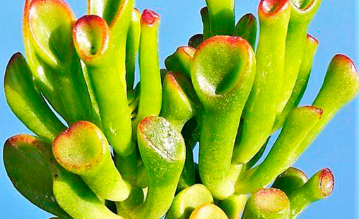
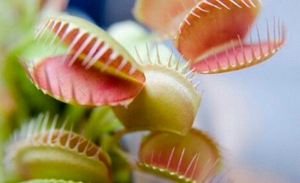
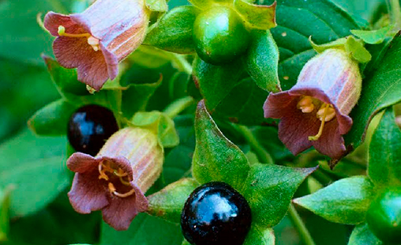
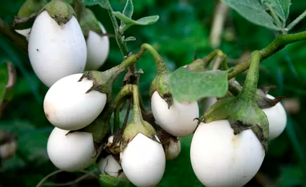

Nome científico: Philodendron 'Pink Princess'
Luminosidade: Gosta de luz indireta, evitando que receba luz solar diretamente.
Regas: Mantenha a terra um pouco úmida, regando regulamente, mas evite deixar as raízes encharcadas.
Cuidados especiais: Proteja a planta de temperaturas extremas e correntes de ar intensas.

Nome científico: Crassula ovata Gollum
Luminosidade: Gosta de muita luz natural, com cultivo feito em sol pleno ou sob sombra parcial.
Regas: Realizada com um espaçamento de tempo, mantendo o solo seco entre uma irrigação e outra.
Cuidados especiais: prefere de solos arenosos, com boa drenagem e PH neutro.

Nome científico: Dionaea muscipula
Luminosidade: Gosta de luz solar direta, deixando ela mais saudável e avermelhada
Regas: Solo levemente úmido sempre, requer água de qualidade, como água destilada, água da chuva ou água filtrada.
Cuidados especiais: Alimente-a ocasionalmente com pequenos insetos.

Nome científico: Atropa belladonna
Luminosidade: Precisa de sol pleno todos os dias, dependendo de um mínimo de seis horas de luz solar.
Regas: Deixar o substrato secar ligeiramente entre regas, deve regar por imersão do vaso numa pequena bacia de água ou alguidar.
Cuidados especiais: As folhagens doentes devem ser descartadas.

Nome científico: Solanum ovigerum
Luminosidade: Sol pleno, meia-sombra ou local com intensa luminosidade.
Regas: A rega precisa ser diária. Deve-se usar terra vegetal para plantá-las.
Cuidados especiais: Caso precise trocá-la de lugar, deve ser manipulada com cuidado para que as raízes não quebrem.
Nome científico: Antirrhinum majus
Luminosidade: Prefere locais com boa luminosidade, mas que não sejam expostos diretamente ao sol escaldante.
Regas: Rega regular, mas evite o excesso, pois o encharcamento pode ser prejudicial.
Cuidados especiais: Elas prosperam em climas mais frios e podem precisar de sombra durante as partes mais quentes do dia em climas mais quentes.